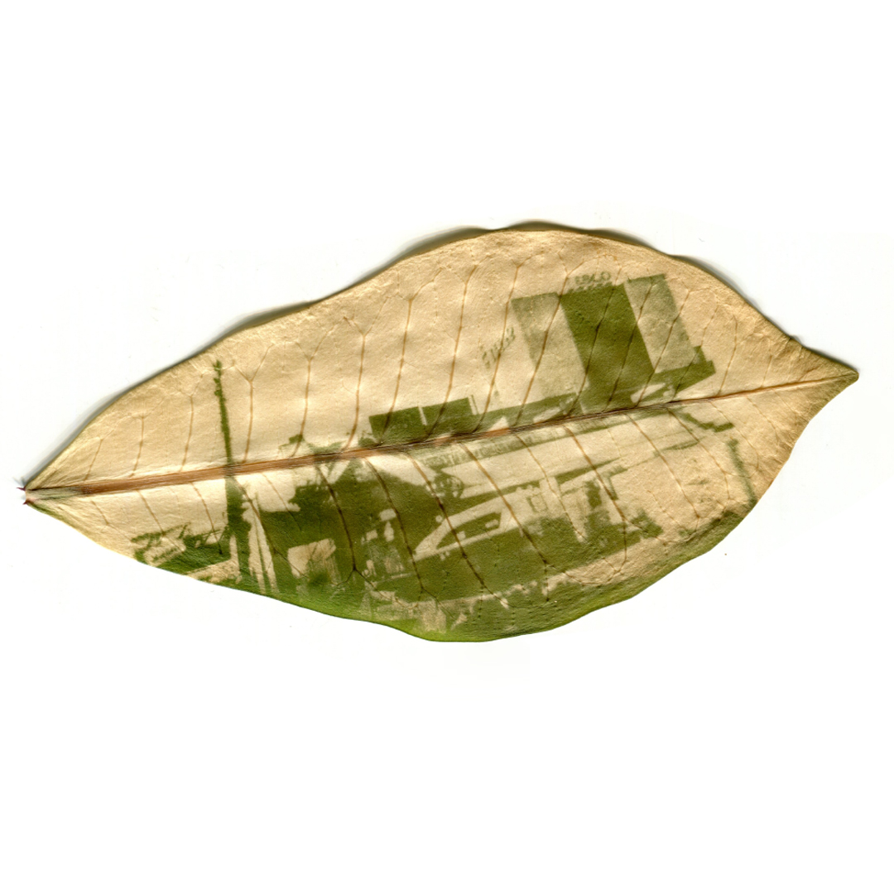
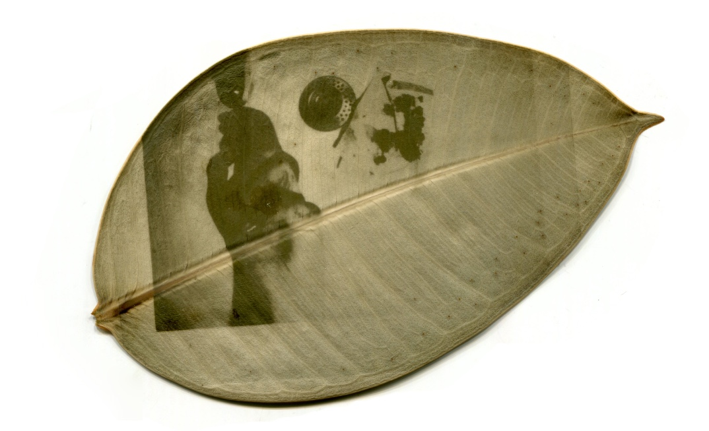
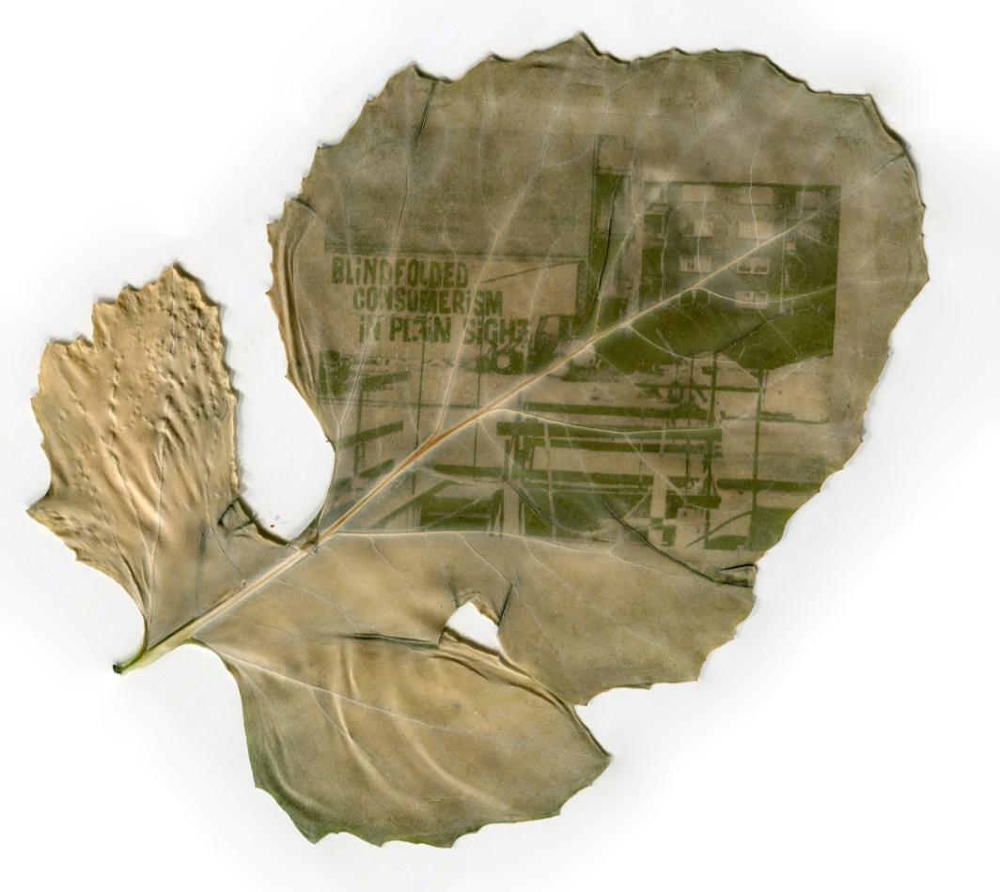
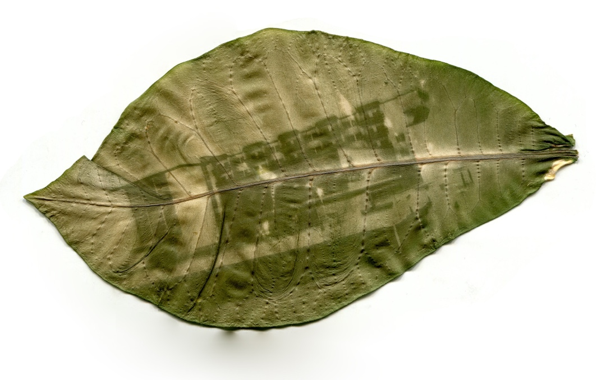
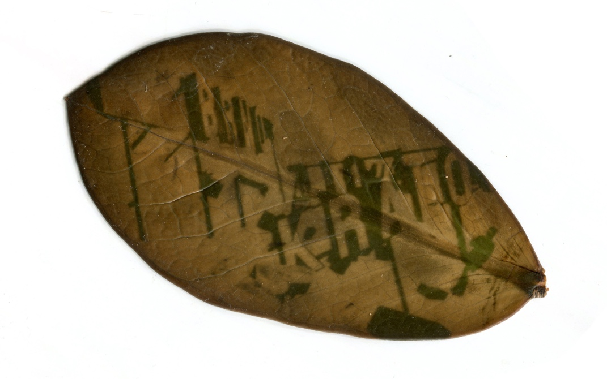
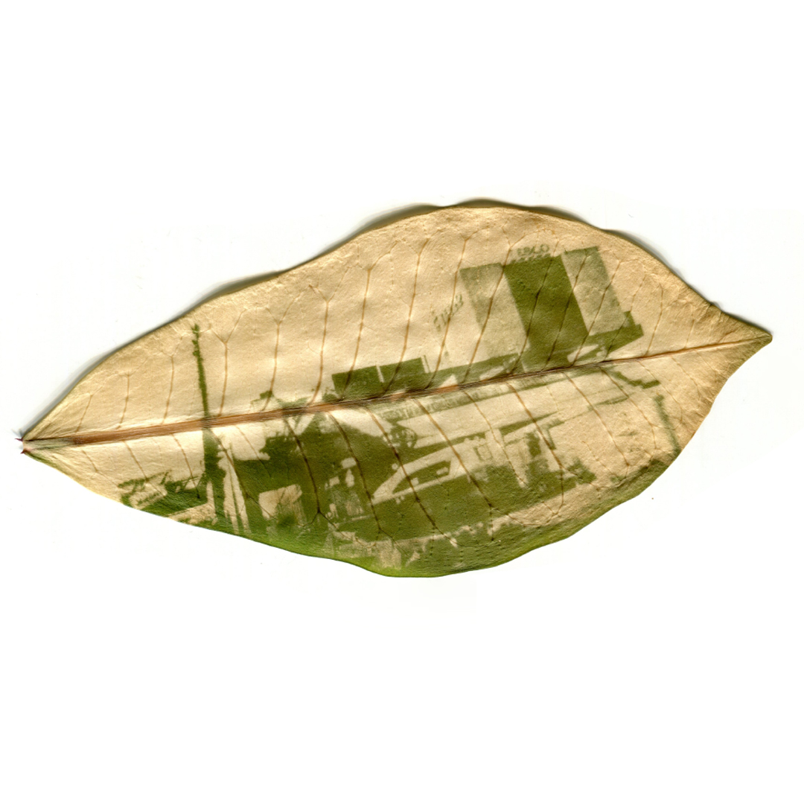
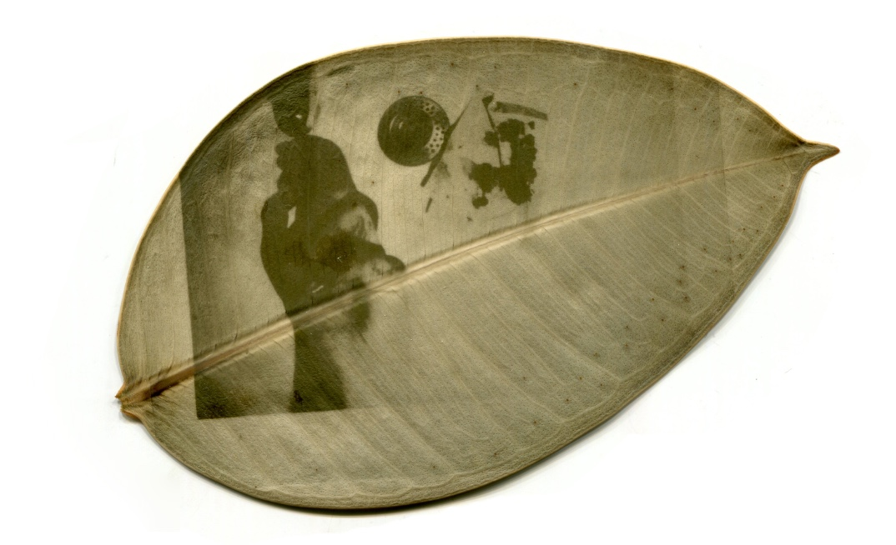
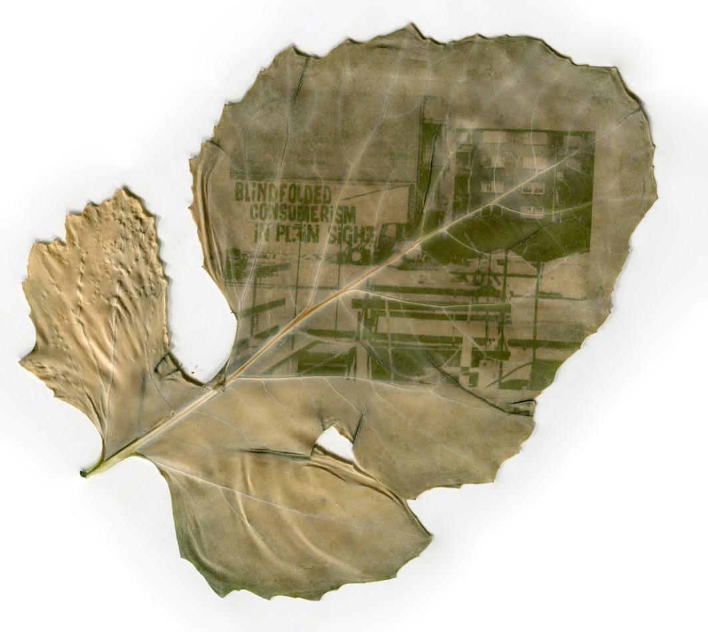
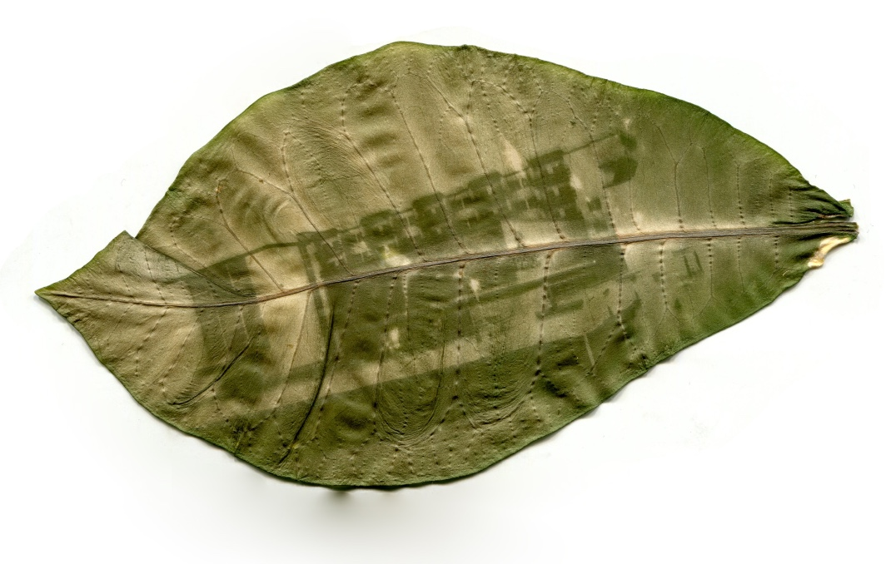
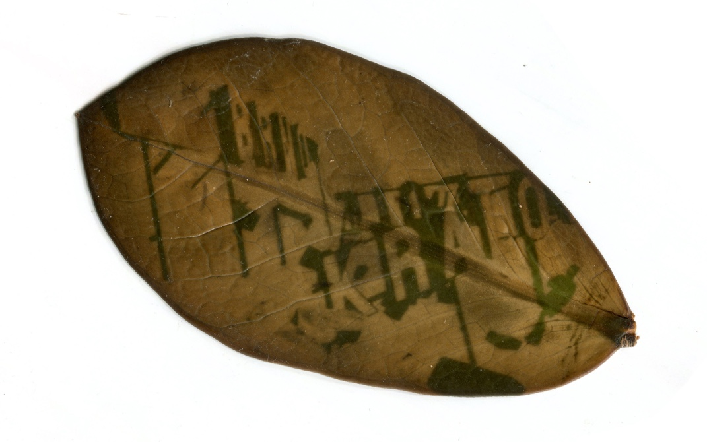

PALIMPSEST
003 | 2025
003 | 2025
 









PALIMPSEST
2025
In 2022, buildings accounted for 34% of global energy demand and 37% of energy and process-related CO₂ emissions.
This information should completely change how we think about architecture, designing new buildings or working with the ones that are already built. I do not think that our situation is allowing us to demolish buildings thoughtlessly to make space for new ones. In my task I focused on the carbon footprint that the building leaves behind. The building might be already gone, but the imprint stays.
I approached this topic by creating chlorophyll prints that reflect the recent demolitions in my city.
Palimpsest
Originally a manuscript that has been written over while still retaining traces of its earlier text, the term has come to describe layers of history, memory, or use visible in a single place. In the context of urban space, a palimpsest captures how past actions, structures, and occupations leave traces that persist even after the original elements are gone.